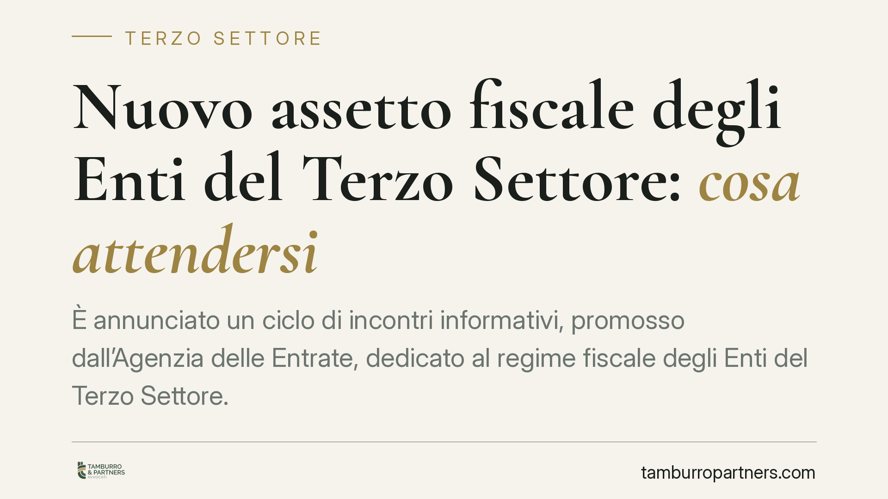

Nuovo assetto fiscale degli Enti del Terzo Settore: cosa attendersi
È annunciato un ciclo di incontri informativi, promosso dall'Agenzia delle Entrate, dedicato al regime fiscale degli Enti del Terzo Settore. Il tema interessa migliaia di enti: l'applicazione delle norme fiscali del Titolo X del Codice richiede la verifica di soglie e criteri che incidono sulla qualifica stessa. Vediamo cosa è noto e cosa resta da ufficializzare.

Il fatto
L'Agenzia delle Entrate ha annunciato un ciclo di incontri informativi destinato a illustrare il regime fiscale degli Enti del Terzo Settore (ETS). L'iniziativa fa seguito al percorso normativo avviato con la riforma del Terzo Settore e punta a chiarire l'applicazione concreta delle disposizioni del Titolo X del Codice del Terzo Settore (D.Lgs. 117/2017, di seguito CTS).
Avvertenza sui riferimenti. Il numero e la data esatta della circolare interpretativa, così come sede e calendario degli incontri, sono in corso di ufficializzazione. In questo contributo trattiamo quindi il quadro normativo consolidato del CTS, rinviando alla fonte ufficiale per i dettagli attuativi non ancora confermati.
Inquadramento normativo
Il nodo centrale è la decorrenza delle disposizioni fiscali del Titolo X del CTS. Molte di queste norme — in particolare quelle di maggior favore — sono rimaste in sospensione in attesa dell'autorizzazione della Commissione europea ai sensi della disciplina sugli aiuti di Stato (art. 108 TFUE). L'art. 104 CTS subordina infatti l'efficacia di parte del regime all'ottenimento di tale via libera: fino ad allora continuano ad applicarsi, in via transitoria, le norme previgenti.
Due disposizioni meritano attenzione.
L'art. 6 CTS disciplina le attività diverse, cioè quelle secondarie e strumentali rispetto alle attività di interesse generale. Queste sono ammesse entro limiti di secondarietà e strumentalità fissati in via regolamentare (D.M. 107/2021): in sintesi, i relativi ricavi non possono superare il 30% delle entrate complessive oppure il 66% dei costi complessivi dell'ente. Superare tali soglie espone al rischio di contestazioni sulla stessa qualifica di ETS.
L'art. 79 CTS stabilisce il criterio con cui si qualifica un ente come non commerciale ai fini fiscali. Il meccanismo ruota attorno a un confronto quantitativo: l'ente conserva la natura non commerciale se le entrate derivanti da attività svolte in forma commerciale non risultano prevalenti rispetto a quelle non commerciali (contributi, donazioni, quote associative, proventi da attività gratuite o rese entro i costi effettivi). Il comma 2-bis chiarisce quando le attività di interesse generale si considerano non commerciali: in particolare, quando sono svolte a titolo gratuito o dietro corrispettivi che non superano i costi effettivi, tenuto conto anche degli apporti pubblici.
Il comma 5 dell'art. 79 disciplina il passaggio inverso: se nel periodo d'imposta i proventi commerciali superano quelli non commerciali, l'ente perde la qualifica di ente non commerciale a decorrere dallo stesso periodo. È il punto più delicato, perché l'effetto non è graduale ma opera sull'intero esercizio.
Implicazioni pratiche
Per un ETS la questione non è teorica. Il superamento delle soglie dell'art. 6 o l'inversione del rapporto tra entrate commerciali e non commerciali dell'art. 79 produce conseguenze fiscali immediate: mutamento del regime applicabile, diverso trattamento dei proventi, possibili riqualificazioni in sede di controllo.
Il punto interpretativo decisivo è la corretta classificazione delle entrate. Un corrispettivo che copre i soli costi effettivi resta nel perimetro non commerciale; lo stesso corrispettivo fissato a livello superiore può spostare l'ente oltre la soglia di prevalenza. La differenza passa dalla contabilità analitica e dalla capacità di documentare il rapporto costi-ricavi per singola attività.
Cosa fare in concreto
- Verificate la ripartizione delle entrate dell'ultimo esercizio tra componente commerciale e non commerciale, applicando il criterio di prevalenza dell'art. 79 CTS.
- Controllate il rispetto delle soglie di secondarietà delle attività diverse (art. 6 CTS e D.M. 107/2021): rapporto 30% sulle entrate o 66% sui costi.
- Documentate per ciascuna attività il confronto tra corrispettivi e costi effettivi, così da sostenere la natura non commerciale ai sensi del comma 2-bis.
- Aggiornate il sistema contabile in modo da monitorare in corso d'anno l'eventuale avvicinamento alle soglie, evitando scoperte a consuntivo.
- È opportuno affiancare alla lettura dei documenti ufficiali una verifica tecnica sulla situazione specifica dell'ente, data la variabilità dei casi concreti.
Conclusione
Il quadro fiscale degli ETS dipende ancora dall'ufficializzazione dei provvedimenti attuativi e dall'ok europeo sugli aiuti di Stato. Nel frattempo, il lavoro utile riguarda la mappatura delle entrate e il monitoraggio delle soglie: sono questi gli elementi che determinano la qualifica dell'ente, a prescindere dai dettagli attuativi.
---
*Contributo informativo a cura di Tamburro & Partners - Avv. Giuseppe Tamburro. Non costituisce parere legale.*
Ogni ente del terzo settore ha la sua storia.
Se rappresenti un ETS e vuoi un confronto su governance, RUNTS o fiscalità, scrivi allo studio. Ti rispondiamo entro un giorno lavorativo.